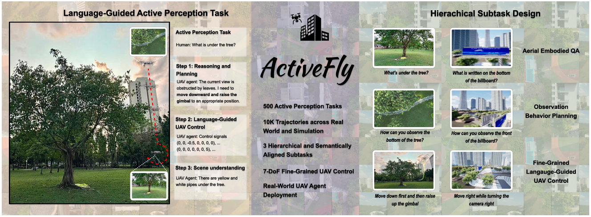
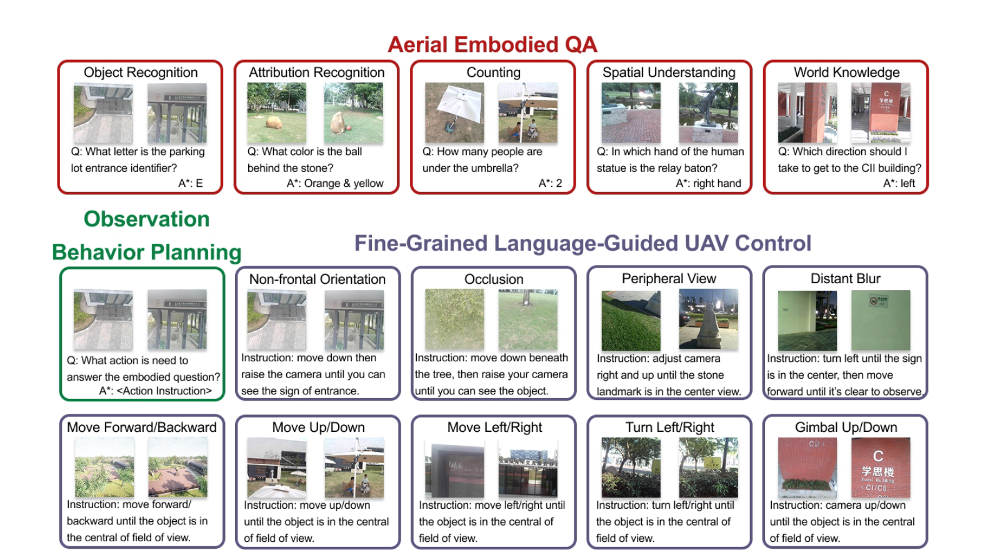
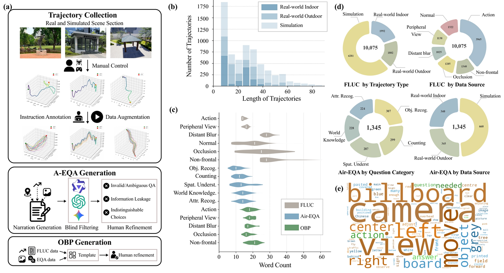
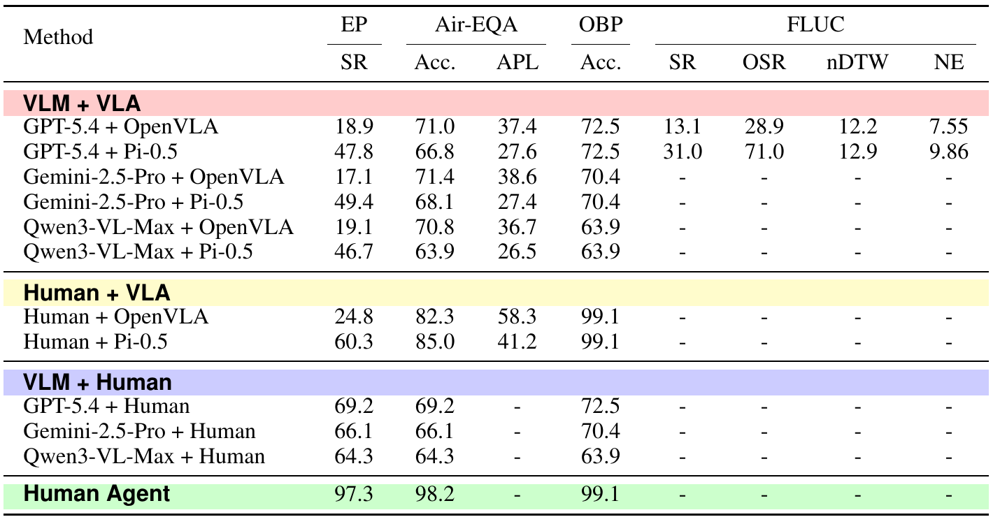
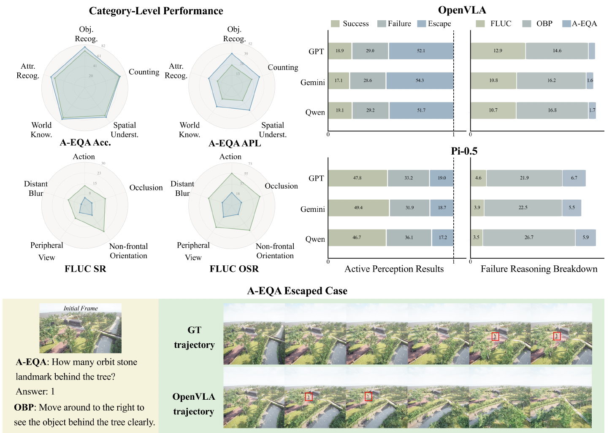
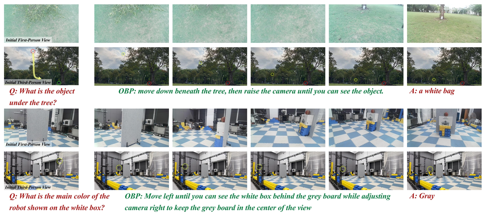

First Linked Benchmark
It bridges high-level embodied question answering and low-level UAV action execution instead of evaluating them as isolated capabilities.
Overview
ActiveFly-Bench is built for language-guided UAV active perception, where an agent must reason from a question, plan how to observe, execute fine-grained control, and answer from the gathered visual evidence.
It bridges high-level embodied question answering and low-level UAV action execution instead of evaluating them as isolated capabilities.
Air-EQA, OBP, and FLUC share the same semantic route from question to observation behavior to executable UAV movement.
ActiveFly combines VLM planning with VLA control and is validated on a physical UAV through a ground-drone collaborative system.

Abstract
ActiveFly-Bench is introduced as a benchmark for connecting cyberspace reasoning and physical-world interaction in UAV embodied perception. It decomposes active perception into Aerial Embodied Question Answering, Observation Behavior Planning, and Fine-grained Language-guided UAV Control, explicitly linking high-level task understanding, behavior planning, and low-level control.
The datasets are collected from real-world and simulated outdoor environments. ActiveFly is further developed as a closed-loop UAV agent that integrates visual-language reasoning with fine-grained control. Experiments with representative VLMs and VLA models show that current agents still struggle with observation planning, viewpoint adjustment, and robust task completion.
Tasks
The benchmark asks whether a UAV can answer an embodied question by deciding where to look and then executing the motion needed to obtain the right viewpoint.
Answer an aerial embodied question after actively collecting relevant observations.
Infer the observation behavior needed to answer the question from the initial view.
Generate fine-grained UAV-body and gimbal actions that reach a task-relevant viewpoint.

Dataset
The benchmark is built from expert trajectories and human-validated QA/planning annotations, keeping the three subtasks aligned at the semantic level.

ActiveFly Agent
ActiveFly first uses a VLM to plan the observation behavior, passes that plan to a VLA model for fine-grained UAV action prediction, and then answers the embodied question from sampled observation history.
The VLM predicts how the UAV should move or adjust viewpoint to acquire missing information.
The VLA consumes the observation plan, current observation, and UAV state to predict control actions.
After execution, the VLM answers from a sampled observation history; the paper uses 16 images in practice.
Experiments
The evaluation combines VLMs such as GPT-5.4, Gemini-2.5-Pro, and Qwen3-VL-Max with VLA models including OpenVLA and Pi-0.5, plus human upper-bound settings.

Pi-0.5-based agents reach much higher EP success than OpenVLA-based agents, with stronger FLUC SR and OSR.
The human agent reaches 97.3 EP SR, 98.2 Air-EQA accuracy, and 99.1 OBP accuracy.
The analysis highlights OBP failure, Air-EQA escape, and imprecise stopping near target viewpoints.

Real-World Deployment
The real-world system streams first-person video and UAV state to a ground station, runs VLM/VLA inference on a server, and returns actions for closed-loop execution.

Citation
@misc{activeflybench2026,
title = {ActiveFly-Bench: Aligning Embodied Question Answering with Vision-Language-Action for Aerial Embodied Perception},
author = {Anonymous Author(s)},
year = {2026},
note = {Submitted to NeurIPS 2026}
}